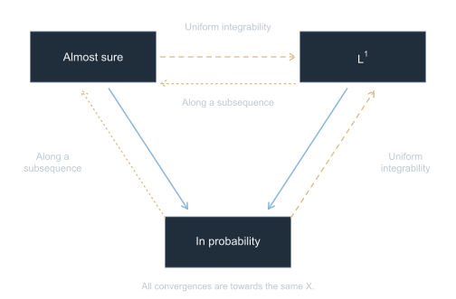
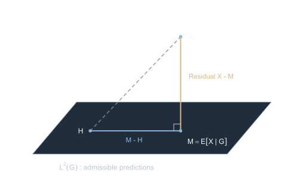

Probability for insurance: risk pooling, segmentation and solidarity
Chapter 3
3.1 Losses and their expectations
In the previous chapter, we studied insurance from the policyholder’s point of view: why would a risk-averse individual pay to transfer a loss, and which contract would they choose? We now turn to the insurer, which collects premiums and pays claims. Understanding the resulting risk requires studying the distribution of these claims. In this chapter, we focus on expectation and variance, the quantities associated with the first two moments. Although they do not determine the whole distribution, they provide a basis for pure-premium pricing, explain the effect of pooling, and help bound the probability of losses exceeding a given threshold.
We begin by revisiting familiar probability concepts from an insurance perspective, before developing conditional expectation in greater detail. This allows us to distinguish uncertainty within groups of similar risks from differences in expected costs between groups. We shall use this distinction to clarify the respective roles of mutualisation and solidarity: pooling shares the uncertainty of individual losses, while premiums that do not fully reflect differences in expected costs create transfers between lower- and higher-expected-cost policyholders.
3.1.1 The probabilistic framework
We work on a probability space \((\Omega,\mathcal F,\mathbb P)\), within the classical measure-theoretic framework of probability associated with Borel and Kolmogorov. We shall not need advanced results from measure theory. Recall that \(\Omega\) is the set of possible outcomes, \(\mathcal F\) is a sigma-algebra of events, and \(\mathbb P\) is a probability measure on \((\Omega,\mathcal F)\).1
A real-valued random variable is a measurable map from \((\Omega,\mathcal F)\) to \((\mathbb R,\mathcal B(\mathbb R))\). Here \(\mathcal B(\mathbb R)\) is the Borel sigma-algebra of \(\mathbb R\), the smallest sigma-algebra containing all open intervals. Its elements are called Borel sets; they include in particular intervals, singletons, open and closed sets, and their countable unions and intersections. No detailed knowledge of their construction will be needed: the subsets of \(\mathbb R\) used in this course will all be Borel sets. We shall also use \(\mathcal B(p)\) for the Bernoulli distribution with parameter \(p\); the argument makes the meaning of the notation unambiguous.
3.1.2 Expectation and integrability
We assume that expectation and variance are already familiar. We recall only the conventions needed below. A random variable \(X\) is integrable, or belongs to \(L^1\), when \(\mathbb E[|X|]\) is finite; its expectation \(\mathbb E[X]\) is then well defined and finite.
In insurance, \(X\) typically represents a non-negative monetary loss: for example, the cost of a particular claim or the total claims paid under a policy over a given period (for instance one year). For a non-negative random variable, the expectation is always defined, possibly equal to \(+\infty\). Thus \(X\in L^1\) simply means \(\mathbb E[X]<+\infty\). For a variable bounded below by a finite constant, its expectation is also well defined in \((-\infty,+\infty]\), since its negative part is bounded; it belongs to \(L^1\) exactly when this expectation is finite.
3.1.3 Cumulative distribution functions and expectation
The cumulative distribution function, often abbreviated to CDF, of \(X\) is
\[ F_X:x\in\mathbb R\mapsto\mathbb P(X\leq x). \]
In French, it is called the fonction de répartition. Recall that \(F_X\) is non-decreasing and right-continuous, with
\[ \lim_{x\to-\infty}F_X(x)=0 \quad\text{and}\quad \lim_{x\to+\infty}F_X(x)=1. \]
It determines the distribution of \(X\). In particular, for \(a<b\),
\[ \mathbb P(a<X\leq b)=F_X(b)-F_X(a). \]
The left limit \(F_X(x-)=\lim_{t\uparrow x}F_X(t)\) equals \(\mathbb P(X<x)\), so a jump at \(x\) has size
\[ F_X(x)-F_X(x-)=\mathbb P(X=x). \]
A jump therefore represents a positive probability attached to a single value, also called an atom of the distribution.
Whenever the expectation is defined, it can also be computed from the CDF:
\[ \mathbb E[X] =\int_\Omega X(\omega)\,\mathbb P(\mathrm d\omega) =\int_{\mathbb R}x\,\mathrm dF_X(x). \]
The first expression is a Lebesgue integral on the probability space. The second is a Lebesgue–Stieltjes integral: we integrate over the possible values of \(X\), with respect to the probability measure determined by \(F_X\). The name combines Stieltjes’ idea of integrating against the increments of an increasing function with Lebesgue’s measure-theoretic approach to integration. Stieltjes introduced his integral in his work on continued fractions and the moment problem in 1894; Lebesgue developed his integration theory at the beginning of the twentieth century (MacTutor History of Mathematics Archive, n.d.-b, n.d.-a). \(\mathrm dF_X(x)\) accounts for both continuous parts and atoms; it does not in general mean \(F_X'(x)\,\mathrm dx\).
3.1.4 Three familiar forms of the distribution
Discrete losses. If \(X\) takes distinct values in a finite or countable set \(\{x_k:k\in K\}\), its distribution is
\[ \sum_{k\in K}\mathbb P(X=x_k)\,\delta_{x_k}, \]
where \(\delta_x\) is the Dirac probability measure at \(x\). Its CDF is
\[ F_X:x\in\mathbb R\mapsto \sum_{k\in K}\mathbb P(X=x_k)\mathbf 1_{\{x_k\leq x\}}, \]
and its expectation (when it is well defined) is
\[ \mathbb E[X]=\sum_{k\in K}x_k\mathbb P(X=x_k). \]
The Lebesgue–Stieltjes integral is therefore a sum weighted by the sizes of the jumps of \(F_X\).
Losses with a density. If the distribution of \(X\) has density \(f_X\) with respect to Lebesgue measure, then its CDF is
\[ F_X:x\in\mathbb R\mapsto\int_{-\infty}^x f_X(t)\,\mathrm dt, \]
and its expectation is
\[ \mathbb E[X]=\int_{\mathbb R}x f_X(x)\,\mathrm dx. \]
In this case \(F_X\) is absolutely continuous, \(F_X'=f_X\) Lebesgue-almost everywhere, and \(\mathrm dF_X(x)=f_X(x)\,\mathrm dx\). For a non-negative loss, the expectation integral can be restricted to \([0,\infty)\). Continuity of \(F_X\) alone does not imply the existence of a density, as the example of the devil’s staircase in the aside below illustrates.
No claim, or a claim with a continuous severity. A particularly common insurance model has distribution
\[ (1-p)\delta_0(\mathrm dx) +p f(x)\mathbf 1_{\{x>0\}}\,\mathrm dx, \]
where \(p\in(0,1)\) is the probability of a claim and \(f\) is the density of its amount conditional on a claim occurring. In particular,
\[ f(x)\geq0\quad\text{for }x>0 \quad\text{and}\quad \int_0^\infty f(x)\,\mathrm dx=1. \]
The CDF is
\[ F_X:x\in\mathbb R\mapsto \begin{cases} 0,&x<0,\\ 1-p+p\displaystyle\int_0^x f(t)\,\mathrm dt,&x\geq0, \end{cases} \]
and the expectation is
\[ \mathbb E[X]=p\int_0^\infty x f(x)\,\mathrm dx. \]
Equivalently, this law can be obtained by taking \(X=BS\), where \(B\) is Bernoulli with parameter \(p\), \(S\) has density \(f\) on \((0,\infty)\), and \(B\) and \(S\) are independent.
3.1.5 Expectation as the area under the survival function
The survival function of \(X\) is
\[ \overline F_X:x\in\mathbb R\mapsto\mathbb P(X>x)=1-F_X(x). \]
Proposition 3.1 (Expectation and the survival function) For every non-negative random variable \(X\),
\[ \mathbb E[X]=\int_0^\infty\mathbb P(X>t)\,\mathrm dt. \]
Both sides may be infinite. This formula applies to discrete, continuous and mixed distributions without any change.
Proof. Recall first that, for every event \(A\), the indicator \(\mathbf 1_A\) has a Bernoulli distribution:
\[ \mathbf 1_A\sim\mathcal B(\mathbb P(A)) \quad\text{and}\quad \mathbb E[\mathbf 1_A]=\mathbb P(A). \]
For every \(\omega\in\Omega\),
\[ X(\omega)=\int_0^{X(\omega)}1\,\mathrm dt =\int_0^\infty\mathbf 1_{\{X(\omega)>t\}}\,\mathrm dt. \]
By Tonelli’s theorem (the non-negative form of Fubini’s theorem), we may interchange expectation and integration. Since the integrand is non-negative, there is no integrability condition to check, and the equality remains valid when the integrals are infinite:
\[ \mathbb E[X] =\int_0^\infty\mathbb E[\mathbf 1_{\{X>t\}}]\,\mathrm dt =\int_0^\infty\mathbb P(X>t)\,\mathrm dt. \]
For a non-negative integer-valued loss, the formula becomes
\[ \mathbb E[X] =\sum_{k=0}^\infty\mathbb P(X>k) =\sum_{k=1}^\infty\mathbb P(X\geq k). \]
3.2 Variance and the probability of large losses
3.2.1 The best constant prediction
Recall that \(X\in L^2\) means \(\mathbb E[X^2]<+\infty\) and implies \(X\in L^1\). For such a variable, write
\[ m=\mathbb E[X]\quad\text{and}\quad \sigma^2=\mathbb V(X)=\mathbb E[(X-m)^2] = \mathbb E[X^2] - \mathbb E[X]^2. \]
Proposition 3.2 (Expectation as the best constant prediction) For \(X\in L^2\), the unique minimiser of \(c\in\mathbb R\mapsto\mathbb E[(X-c)^2]\) is \(\mathbb E[X]\), and the minimum is \(\mathbb V(X)\):
\[ \operatorname*{arg\,min}_{c\in\mathbb R}\mathbb E[(X-c)^2] =\{\mathbb E[X]\}\quad\text{and}\quad \min_{c\in\mathbb R}\mathbb E[(X-c)^2]=\mathbb V(X). \]
Proof. For every \(c\in\mathbb R\),
\[ \begin{aligned} \mathbb E[(X-c)^2] &=\mathbb E[(X-m+m-c)^2]\\ &=\mathbb E[(X-m)^2]+2(m-c)\mathbb E[X-m]+(m-c)^2\\ &=\mathbb V(X)+(m-c)^2. \end{aligned} \]
The conclusion follows because \((m-c)^2\) is non-negative and vanishes only at \(c=m\).
The expectation is the best constant prediction under squared error; the variance is the remaining mean squared error. This interpretation will be the starting point for conditional expectation below.
3.2.2 Bienaymé–Chebyshev inequality
Theorem 3.1 (Bienaymé–Chebyshev inequality) Let \(X\in L^2\), \(m=\mathbb E[X]\) and \(\sigma^2=\mathbb V(X)\). For every \(t>0\),
\[ \mathbb P(|X-m|\geq t)\leq\frac{\sigma^2}{t^2}. \]
If \(\sigma>0\), the equivalent formulation in units of standard deviation is
\[ \mathbb P(|X-m|\geq k\sigma)\leq\frac{1}{k^2} \quad\text{for}\quad k>0. \]
Proof. Apply Markov’s inequality to the non-negative random variable \((X-m)^2\):
\[ \mathbb P(|X-m|\geq t) =\mathbb P((X-m)^2\geq t^2) \leq\frac{\mathbb E[(X-m)^2]}{t^2}. \]
A bound above one can of course be replaced by the trivial bound one.
3.2.3 Cantelli’s inequality: controlling an exceedance
For an insurer, a large loss above its expectation is usually more concerning than a loss equally far below it. This motivates a one-sided version of the preceding inequality.
Theorem 3.2 (Cantelli’s inequality) Let \(X\in L^2\), \(m=\mathbb E[X]\) and \(\sigma^2=\mathbb V(X)\). For every \(t>0\),
\[ \mathbb P(X-m\geq t) \leq\frac{\sigma^2}{\sigma^2+t^2}. \]
If \(\sigma>0\), this can also be written as
\[ \mathbb P(X\geq m+k\sigma)\leq\frac{1}{1+k^2} \quad\text{for}\quad k>0. \]
For example, the probability of exceeding the mean by at least three standard deviations is at most \(1/10\), whatever the distribution with finite second moment.
Proof. Set \(Y=X-m\). For any \(a\geq0\),
\[ \{Y\geq t\}\subseteq\{(Y+a)^2\geq(t+a)^2\}. \]
Markov’s inequality therefore yields
\[ \mathbb P(Y\geq t) \leq\frac{\mathbb E[(Y+a)^2]}{(t+a)^2} = \frac{\mathbb E[Y^2] + 2a\mathbb E[Y]+a^2}{(t+a)^2} =\frac{\sigma^2+a^2}{(t+a)^2}. \]
If \(\sigma^2>0\), differentiation gives
\[ \frac{\mathrm d}{\mathrm da} \frac{\sigma^2+a^2}{(t+a)^2} =\frac{2(at-\sigma^2)}{(t+a)^3}. \]
The derivative has the sign of \(at-\sigma^2\), giving the following variation table:
\[ \begin{array}{c|ccccc} a & 0 & & \dfrac{\sigma^2}{t} & & +\infty \\[6pt] \hline \dfrac{\mathrm d}{\mathrm da} \dfrac{\sigma^2+a^2}{(t+a)^2} & & - & 0 & + & \\[10pt] \hline \dfrac{\sigma^2+a^2}{(t+a)^2} & \dfrac{\sigma^2}{t^2} & \searrow & \dfrac{\sigma^2}{\sigma^2+t^2} & \nearrow & 1 \end{array} \]
The minimum over \(a\geq0\) is therefore attained at \(a=\sigma^2/t\) and equals \(\sigma^2/(\sigma^2+t^2)\), hence the result. If \(\sigma^2=0\), then \(X=m\) almost surely, so the inequality holds directly.
These are concentration inequalities: they control deviations from a central value. Variance alone gives general but sometimes coarse bounds. Stronger assumptions lead to other inequalities, such as Hoeffding’s inequality for sums of independent bounded variables, or Chernoff bounds when exponential moments are available. Additional assumptions should not be taken for granted for insurance losses.
3.3 The law of large numbers and risk pooling
3.3.1 A reminder on convergence
3.3.2 The law of large numbers in \(L^1\)
Theorem 3.3 (Law of large numbers) Let \((X_i)_{i\geq1}\) be independent and identically distributed random variables with \(X_1\in L^1\). Then
\[ \frac1n\sum_{i=1}^nX_i \xrightarrow{\mathbb P,\,\mathrm{a.s.},\,L^1}\mathbb E[X_1]. \]
A finite variance is not required. For a guided proof, see the problem From weak to strong: around the law of large numbers on I Love Proba.
3.3.3 Why a large portfolio helps
Let \(X_i\) be the annual claim cost of policyholder \(i\). If these costs are i.i.d. and integrable, the average claim cost converges to \(\mathbb E[X_1]\). Charging this pure premium for every policy gives the insurer the following net claim cost per policy:
\[ \frac1n\sum_{i=1}^n\bigl(X_i-\mathbb E[X_1]\bigr) \xrightarrow{\mathbb P,\,\mathrm{a.s.},\,L^1}0. \]
This is the basic principle of risk pooling, also called mutualisation: individual uncertainty becomes more predictable when we consider an average over many risks.
The effect is particularly transparent for square-integrable losses. If \(X_1\in L^2\) and \(\sigma^2=\mathbb V(X_1)\), then
\[ \mathbb V\!\left(\frac1n\sum_{i=1}^nX_i\right) =\frac{\sigma^2}{n} \quad\text{and}\quad \mathbb V\!\left(\sum_{i=1}^nX_i\right)=n\sigma^2. \]
The variance of the average decreases, even though the variance of the total increases. For every \(\varepsilon>0\), the Bienaymé–Chebyshev inequality gives
\[ \mathbb P\!\left(\left|\frac1n\sum_{i=1}^nX_i-\mathbb E[X_1]\right|\geq\varepsilon\right) \leq\frac{\sigma^2}{n\varepsilon^2}. \]
If we are only interested in the right tail, Cantelli’s inequality gives
\[ \mathbb P\!\left(\frac1n\sum_{i=1}^nX_i\geq\mathbb E[X_1]+\varepsilon\right) \leq\frac{\sigma^2}{\sigma^2+n\varepsilon^2}. \]
3.3.4 The central limit theorem: the scale of aggregate fluctuations
The law of large numbers explains why the average claim approaches its expectation. It does not, by itself, describe the distribution of the remaining fluctuations. For finite-variance risks, the central limit theorem provides the next level of approximation.
Theorem 3.4 (Central limit theorem) Let \((X_i)_{i\geq1}\) be independent and identically distributed \(L^2\) random variables with
\[ m=\mathbb E[X_1] \quad\text{and}\quad 0<\sigma^2=\mathbb V(X_1). \]
Write
\[ S_n=\sum_{i=1}^nX_i. \]
Then
\[ \frac{S_n-nm}{\sigma\sqrt n} \xrightarrow{\mathrm d}\mathcal N(0,1). \]
Equivalently, if \(\Phi\) denotes the standard normal cumulative distribution function, then, for every \(z\in\mathbb R\),
\[ \mathbb P\!\left(\frac{S_n-nm}{\sigma\sqrt n}\leq z\right) \longrightarrow\Phi(z). \]
The convergence is in distribution. The theorem does not assert that a finite sum is exactly normal, or that the normal approximation is equally accurate at every portfolio size and confidence level.
The result has a long history, from approximations for sums of independent variables to the formulation of modern limit theorems. Hans Fischer’s A History of the Central Limit Theorem: From Classical to Modern Probability Theory (Fischer 2011) follows this development from about 1810 to 1950.
A numerical illustration
Suppose that each of \(n\) independent policies pays €1,000 with probability \(0.2\) and nothing otherwise. Then
\[ m=200\quad\text{and}\quad\sigma^2=160{,}000,\quad\text{so}\quad\sigma=400. \]
For a 99% target, \(z_{0.99}\simeq2.32635\), so the normal approximation suggests \(K_n=400\sqrt n\,z_{0.99}\).
| Number of policies \(n\) | Expected total claims \(nm\) | Buffer \(K_n\) | Buffer per policy \(K_n/n\) | Actual exceedance probability |
|---|---|---|---|---|
| 100 | €20,000 | €9,305.39 | €93.05 | 1.125% |
| 1,000 | €200,000 | €29,426.23 | €29.43 | 1.074% |
| 10,000 | €2,000,000 | €93,053.91 | €9.31 | 0.999% |
The final column is calculated from the binomial model, before rounding the buffers: \(S_n=1{,}000N_n\) with \(N_n\sim\operatorname{Bin}(n,0.2)\). It illustrates both the usefulness and the limitations of the approximation. At \(n=100\), the proposed buffer does not quite achieve a 1% exceedance probability.
For comparison, Cantelli’s inequality guarantees an exceedance probability at most \(\varepsilon\) whenever
\[ K_n\geq\sigma\sqrt{n\,\frac{1-\varepsilon}{\varepsilon}}. \]
At \(\varepsilon=0.01\), its multiplier is \(\sqrt{99}\simeq9.95\), compared with \(2.32635\) for the normal approximation. Cantelli gives a finite-portfolio bound using only the mean and variance; the central limit theorem gives an asymptotic approximation that uses the i.i.d. structure. The two statements have different purposes.
For highly skewed claims or extreme confidence levels, convergence may be too slow for the normal approximation to be useful at the portfolio size considered. The theorem as stated does not cover infinite-variance claims or dependent portfolios. Nor does it, by itself, justify accurate far-tail estimates at confidence levels tending to one with \(n\). Finally, the exceedance event above concerns one fixed horizon; it is not an infinite-horizon ruin probability.
3.3.5 What does independence mean in insurance?
Independence may be a reasonable approximation for some geographically dispersed accidental mobile-phone damage claims or isolated water leaks in unrelated buildings. Even there it is an assumption to examine: a common product defect, shared infrastructure or a weather event can create dependence.
For floods, earthquakes or storms, many claims may arise from the same event. A larger portfolio concentrated in the affected area may therefore produce more claims from the same catastrophe, rather than more opportunities for independent losses to offset one another. More generally,
\[ \mathbb V\!\left(\frac1n\sum_{i=1}^nX_i\right) =\frac1{n^2}\sum_{i=1}^n\mathbb V(X_i) +\frac2{n^2}\sum_{i<j}\operatorname{Cov}(X_i,X_j). \]
The covariance terms can prevent concentration. For example, if all variances equal \(\sigma^2>0\) and every distinct pair has the same correlation \(\rho\geq0\), then
\[ \mathbb V\!\left(\frac1n\sum_{i=1}^nX_i\right) =\sigma^2\left(\frac1n+\rho\frac{n-1}{n}\right) \longrightarrow\rho\sigma^2. \]
A common source of uncertainty cannot be eliminated merely by adding more policies exposed to it.
3.3.6 Identically distributed risks: heterogeneity and segmentation
The assumption of identical distributions raises a more subtle question. Some differences are so obvious that we would not naturally put the risks in the same category: a factory and a small shop have different exposures, as do a modest flat and a large industrial building. Even within motor insurance, vehicle value, mileage and driving experience provide immediate reasons to distinguish expected claim costs.
Other differences remain within a product sold on common terms. Consider two travellers visiting the same destination for the same duration: one plans to visit museums, the other to take part in more hazardous outdoor activities. They may nevertheless buy the same package, perhaps included with a booking or a bank card, without being offered a contract tailored to their activities. Likewise, people living in similar homes can differ in their precautions against water damage. A common contract does not imply a common loss distribution.
We should distinguish two questions. Prediction asks which characteristics help explain claims. Pricing asks which of those characteristics the insurer is able and permitted to use, and actually chooses to use when setting premiums. A characteristic may be informative but unavailable, too costly to measure, or deliberately excluded because using it would be considered undesirable or unethical.
Segmentation uses information about risks to distinguish groups of policyholders. It can affect premiums, deductibles, coverage limits or eligibility for cover. For example, an insurer might cover ordinary holiday activities under a standard travel policy but require a separate agreement for high-altitude mountaineering. Insurers may also encourage prevention through financial incentives: some US health plans reimburse qualifying fitness expenses subject to evidence of regular participation. UnitedHealthcare’s Sweat Equity programme provides an example: the cited brochure describes reimbursement for 50 qualifying workouts over six months, with eligibility and reimbursement depending on the plan (UnitedHealthcare, n.d.).
Information available at inception supports a priori pricing, while claims observed during the contract can support a posteriori adjustments. The French bonus-malus system in motor insurance is a familiar example: a coefficient applied to the reference premium evolves with the policyholder’s history of claims involving liability. In the usual case, a year without an at-fault accident reduces the coefficient by 5%, while a fully at-fault accident increases it by 25%, subject to the system’s limits and exceptions (Direction de l’information légale et administrative 2025). Hereafter, we focus on segmentation through premiums while keeping coverage fixed.
Informally, segmentation resembles clustering: we group together risks that appear sufficiently similar and use observations from a group to learn about its members. This does not mean that every pricing model is a clustering algorithm; characteristics may also enter a model continuously.
Finer segmentation has a cost. With a fixed amount of data, dividing a portfolio into more groups leaves fewer observations in each group. Estimates of claim frequencies and average severities then become less precise. Coarser groups provide more observations but conceal more heterogeneity. There is a trade-off between distinguishing risk profiles and estimating their costs reliably.
Heterogeneity also raises the question of solidarity. If all travellers pay the same premium despite different planned activities, those with lower expected costs partly finance those with higher expected costs. A common premium can similarly create transfers between more and less cautious policyholders. In health insurance, such transfers may be a deliberate objective: people in good health contribute towards the expected costs of people with chronic illnesses. A higher expected cost need not result from a choice or a lack of care. Solidarity can therefore be both intentional and desirable; it can also arise simply because relevant differences are not observed.
These transfers differ from sharing chance losses between otherwise comparable people. To make the distinction precise, we need conditional expectation.
3.4 Conditional expectation: prediction using information
3.4.1 The discrete intuition
Let \(X\in L^1\) and suppose that a real-valued characteristic \(Y\) takes values in a finite or countable set. Denote the set of its atoms by
\[ A_Y=\{y\in\mathbb R:\mathbb P(Y=y)>0\}. \]
For these values, define the conditional mean function
\[ g:y\in A_Y\mapsto\mathbb E[X\mid Y=y] =\frac{\mathbb E[X\mathbf 1_{\{Y=y\}}]}{\mathbb P(Y=y)}. \]
If \(X\) is also discrete, this becomes
\[ g(y)=\sum_x x\,\mathbb P(X=x\mid Y=y). \]
The number \(g(y)\) is the average loss within group \(y\). Before we know the policyholder’s group, the corresponding prediction is the random variable \(g(Y)\), denoted by
\[ \mathbb E[X\mid Y]=g(Y). \]
We may set \(g(y)=0\) outside \(A_Y\), since \(\mathbb P(Y\in A_Y)=1\). Notice the distinction between the number \(\mathbb E[X\mid Y=y]\), for a specified group, and the random variable \(\mathbb E[X\mid Y]\), whose value depends on the group.
If \(Y\) has a continuous distribution, however, \(\mathbb P(Y=y)=0\) for every \(y\). Division by this probability is impossible. We need a construction that describes the information supplied by \(Y\) without conditioning directly on a zero-probability event.
3.4.2 Conditional expectation as an \(L^2\) projection
Let \(\mathcal G\subseteq\mathcal F\) be a sub-sigma-algebra representing available information. The main example is \(\mathcal G=\sigma(Y)\), the sigma-algebra generated by a real-valued or vector-valued random variable \(Y\).
Suppose \(X\in L^2\). Informally, we seek the best prediction of \(X\) that uses only this information. Formally, the admissible predictions are the square-integrable, \(\mathcal G\)-measurable random variables, and we measure prediction error by \(\mathbb E[(X-H)^2]\).
Definition 3.2 (Conditional expectation in \(L^2\)) For \(X\in L^2\), the conditional expectation of \(X\) given \(\mathcal G\), denoted by \(\mathbb E[X\mid\mathcal G]\), is the minimiser, unique up to almost sure equality, of the function
\[ H\in L^2(\Omega,\mathcal G,\mathbb P)\mapsto\mathbb E[(X-H)^2]. \]
When \(\mathcal G=\sigma(Y)\), we use the shorter notation
\[ \mathbb E[X\mid Y]=\mathbb E[X\mid\sigma(Y)]. \]
The minimiser exists because \(L^2(\Omega,\mathcal G,\mathbb P)\) is a closed linear subspace of the Hilbert space \(L^2(\Omega,\mathcal F,\mathbb P)\), with inner product \(\langle U,V\rangle=\mathbb E[UV]\). Conditional expectation is the orthogonal projection onto this subspace. We shall also write \(L^2(\mathcal G)\) for \(L^2(\Omega,\mathcal G,\mathbb P)\).
Proposition 3.3 (Orthogonality and Pythagoras) For \(X\in L^2\),
\[ \forall H\in L^2(\mathcal G),\qquad \mathbb E\!\left[(X-\mathbb E[X\mid\mathcal G])H\right]=0. \]
Consequently, for every \(H\in L^2(\mathcal G)\),
\[ \begin{aligned} \mathbb E[(X-H)^2] &=\mathbb E\!\left[(X-\mathbb E[X\mid\mathcal G])^2\right]\\ &\quad+\mathbb E\!\left[(\mathbb E[X\mid\mathcal G]-H)^2\right]. \end{aligned} \]

In Figure 3.2, the plane represents the subspace \(L^2(\mathcal G)\). The right-angled triangle illustrates the Pythagorean identity above; it is a geometric representation of a Hilbert-space projection.
Thus information replaces the best constant prediction \(\mathbb E[X]\) by the best prediction measurable with respect to \(\mathcal G\). In the case \(\mathcal G=\sigma(Y)\), such a prediction can be written as a measurable function of \(Y\):
\[ \mathbb E[X\mid Y]=g(Y). \]
The function \(g\) is determined up to equality \(\mathbb P_Y\)-almost everywhere: changing it on a set of values that \(Y\) has probability zero of visiting leaves the prediction unchanged almost surely.
3.4.3 The characterisation that extends beyond \(L^2\)
Writing \(M=\mathbb E[X\mid\mathcal G]\) and taking \(H=\mathbf 1_A\) in the orthogonality relation gives
\[ \mathbb E[M\mathbf 1_A]=\mathbb E[X\mathbf 1_A] \qquad\text{for every }A\in\mathcal G. \]
This equality only involves first moments. It provides the general definition.
Definition 3.3 (Conditional expectation of an integrable random variable) If \(X\in L^1\), the conditional expectation \(\mathbb E[X\mid\mathcal G]\) is a random variable \(M\), unique up to almost sure equality, such that:
\(M\) is \(\mathcal G\)-measurable;
\(M\in L^1\);
for every \(A\in\mathcal G\),
\[ \mathbb E[M\mathbf 1_A]=\mathbb E[X\mathbf 1_A]. \]
The last property says that the prediction gets the average right on every event identifiable from the available information. Equivalently,
\[ \mathbb E[MH]=\mathbb E[XH] \]
for every bounded \(\mathcal G\)-measurable random variable \(H\). For \(L^2\) variables this extends by approximation to \(H\in L^2(\mathcal G)\), recovering the projection characterisation.
Proof. Existence. For \(X\geq0\) integrable, the finite measure
\[ \nu:A\in\mathcal G\mapsto\mathbb E[X\mathbf 1_A] \]
is absolutely continuous with respect to \(\mathbb P\) restricted to \(\mathcal G\). The Radon–Nikodym theorem gives the required non-negative density \(M\). For a general integrable \(X\), apply the construction to \(X^+\) and \(X^-\), then subtract.
Uniqueness. If \(M\) and \(N\) satisfy the definition, use \(A=\{M>N\}\in\mathcal G\). Then
\[ \mathbb E[(M-N)\mathbf 1_{\{M>N\}}]=0, \]
so \(M\leq N\) almost surely. Interchanging \(M\) and \(N\) proves equality almost surely.
Non-negative random variables with possibly infinite expectation. If \(X\geq0\), define
\[ \mathbb E[X\mid\mathcal G] =\lim_{n\to\infty}\mathbb E[X\wedge n\mid\mathcal G]. \]
Since conditional expectation preserves order, with probability one,
\[ 0\leq\mathbb E[X\wedge n\mid\mathcal G] \leq\mathbb E[X\wedge(n+1)\mid\mathcal G] \qquad\text{for every }n\geq1. \]
On this event of probability one, the sequence is non-decreasing, so its limit exists in \([0,\infty]\). Set the limit to zero on the exceptional event if necessary. Monotone convergence shows that the resulting random variable is \(\mathcal G\)-measurable and satisfies
\[ \forall A\in\mathcal G,\qquad \mathbb E\!\left[\mathbb E[X\mid\mathcal G]\mathbf 1_A\right] =\mathbb E[X\mathbf 1_A], \]
where either side may be infinite and products with an indicator are taken to be zero off the event. This characterisation determines the conditional expectation up to almost sure equality. For a random variable bounded below, subtract a finite lower bound first and add it back afterwards.
In what follows, pricing uses integrable losses and variance calculations use square-integrable losses.
3.4.4 Basic properties
Proposition 3.4 (Properties of conditional expectation) All equalities and inequalities between random variables below hold almost surely. Write \(L^1(\mathcal G)\) for the integrable, \(\mathcal G\)-measurable random variables.
Linearity.
\[ \forall X,W\in L^1,\ \forall a,b\in\mathbb R,\qquad \mathbb E[aX+bW\mid\mathcal G] =a\mathbb E[X\mid\mathcal G]+b\mathbb E[W\mid\mathcal G]. \]
Positivity and monotonicity.
\[ \forall X,W\in L^1,\qquad X\leq W\ \Longrightarrow\ \mathbb E[X\mid\mathcal G]\leq\mathbb E[W\mid\mathcal G]. \]
In particular, the conditional expectation of a non-negative random variable is non-negative.
Known quantities remain unchanged.
\[ \forall X\in L^1(\mathcal G),\qquad\mathbb E[X\mid\mathcal G]=X. \]
Taking out known factors. For every bounded, \(\mathcal G\)-measurable random variable \(H\),
\[ \forall X\in L^1,\qquad\mathbb E[HX\mid\mathcal G]=H\mathbb E[X\mid\mathcal G]. \]
The same equality holds for \(X\in L^2\) and \(H\in L^2(\mathcal G)\), even if \(H\) is unbounded.
Preservation of expectation.
\[ \forall X\in L^1,\qquad\mathbb E[\mathbb E[X\mid\mathcal G]]=\mathbb E[X]. \]
Tower property. If \(\mathcal H\subseteq\mathcal G\) is a sub-sigma-algebra, then
\[ \forall X\in L^1,\qquad \mathbb E\!\left[\mathbb E[X\mid\mathcal G]\mid\mathcal H\right] =\mathbb E[X\mid\mathcal H]. \]
Independent information.
\[ \forall X\in L^1,\qquad X\text{ independent of }\mathcal G \ \Longrightarrow\ \mathbb E[X\mid\mathcal G]=\mathbb E[X]. \]
Positivity, monotonicity, preservation of expectation and the tower property also hold for non-negative random variables with possibly infinite expectations.
3.4.5 Recovering the discrete formula
Suppose \(Y\) takes values in a finite or countable set, and use the set \(A_Y\) and the function \(g\) defined earlier. Then
\[ \mathbb E[|g(Y)|] \leq\sum_{y\in A_Y}\mathbb E[|X|\mathbf 1_{\{Y=y\}}] =\mathbb E[|X|]. \]
Moreover, for every subset \(B\) of \(A_Y\),
\[ \begin{aligned} \mathbb E[g(Y)\mathbf 1_{\{Y\in B\}}] &=\sum_{y\in B}g(y)\mathbb P(Y=y)\\ &=\sum_{y\in B}\mathbb E[X\mathbf 1_{\{Y=y\}}]\\ &=\mathbb E[X\mathbf 1_{\{Y\in B\}}]. \end{aligned} \]
Thus \(g(Y)\) satisfies the characterisation and is indeed \(\mathbb E[X\mid Y]\). Values assigned to \(g(y)\) when \(\mathbb P(Y=y)=0\) do not affect the resulting random variable.
3.4.6 The case of a joint density
Suppose \((X,Y)\), with \(Y\) taking values in \(\mathbb R^d\), has a joint Lebesgue density \(f_{X,Y}\), and \(X\in L^1\). The marginal density of \(Y\) is
\[ f_Y:y\in\mathbb R^d\mapsto\int_{\mathbb R}f_{X,Y}(x,y)\,\mathrm dx. \]
Define the set on which the conditional mean formula is well defined:
\[ D_Y=\left\{y\in\mathbb R^d: 0<f_Y(y)<\infty\quad\text{and}\quad \int_{\mathbb R}|x|f_{X,Y}(x,y)\,\mathrm dx<\infty\right\}. \]
Fubini’s theorem and \(X\in L^1\) imply that \(\mathbb P(Y\in D_Y)=1\). For \(y\in D_Y\), the conditional density is
\[ f_{X\mid Y=y}:x\in\mathbb R\mapsto\frac{f_{X,Y}(x,y)}{f_Y(y)}, \]
and we define
\[ g:y\in D_Y\mapsto\int_{\mathbb R}x f_{X\mid Y=y}(x)\,\mathrm dx. \]
Set \(g(y)=0\) outside \(D_Y\). Then \(\mathbb E[|g(Y)|]\leq\mathbb E[|X|]\). For every bounded measurable function \(h:\mathbb R^d\to\mathbb R\), Fubini’s theorem also gives
\[ \begin{aligned} \mathbb E[g(Y)h(Y)] &=\int_{\mathbb R^d}h(y)\left(\int_{\mathbb R}x f_{X,Y}(x,y)\,\mathrm dx\right)\mathrm dy\\ &=\mathbb E[Xh(Y)]. \end{aligned} \]
Thus \(g(Y)=\mathbb E[X\mid Y]\). We write \(g(y)=\mathbb E[X\mid Y=y]\), understanding that this function is determined only \(\mathbb P_Y\)-almost everywhere. When \(\mathbb P(Y=y)=0\), this notation refers to the conditional mean function, not to division by the probability of the event \(\{Y=y\}\).
An insurance loss with an atom at zero does not satisfy the joint-density assumption above. A common conditional model instead specifies a claim probability \(p(y)\in[0,1]\) and a density \(f(\cdot\mid y)\) on \((0,\infty)\). Extend this density by zero to \((-\infty,0]\). For all real \(a\leq b\),
\[ \begin{aligned} \mathbb P(a\leq X\leq b\mid Y=y) &=(1-p(y))\mathbf 1_{\{a\leq0\leq b\}}\\ &\quad+p(y)\int_a^b f(x\mid y)\,\mathrm dx. \end{aligned} \]
The conditional pure premium is then
\[ \mathbb E[X\mid Y=y]=p(y)\int_0^\infty x f(x\mid y)\,\mathrm dx. \]
Segmentation can therefore act through both claim frequency and claim severity.
3.5 The law of total variance
The projection interpretation already suggests a decomposition: part of the variability of \(X\) is explained by \(Y\), and the rest remains after \(Y\) is known. We now make this precise.
Definition 3.4 (Conditional variance) For \(X\in L^2\), the conditional variance of \(X\) given \(Y\) is the random variable
\[ \mathbb V(X\mid Y) =\mathbb E\!\left[(X-\mathbb E[X\mid Y])^2\mid Y\right] =\mathbb E[X^2\mid Y]-\mathbb E[X\mid Y]^2. \]
It measures residual variability within the group identified by \(Y\). Unlike the unconditional variance, it is generally a random variable: different groups can have different variances.
Theorem 3.5 (Law of total variance) For \(X\in L^2\),
\[ \mathbb V(X) =\mathbb E[\mathbb V(X\mid Y)] +\mathbb V(\mathbb E[X\mid Y]). \]
Proof. Write
\[ X-\mathbb E[X] =\bigl(X-\mathbb E[X\mid Y]\bigr) +\bigl(\mathbb E[X\mid Y]-\mathbb E[X]\bigr). \]
The two terms are orthogonal. To see why, write \(M=\mathbb E[X\mid Y]\). Since \(M\) is \(Y\)-measurable, conditioning it on \(Y\) leaves it unchanged. Hence the residual has conditional mean zero:
\[ \mathbb E[X-M\mid Y] =\mathbb E[X\mid Y]-\mathbb E[M\mid Y] =M-M=0. \]
Now \(M-\mathbb E[X]\) is also \(Y\)-measurable. We first condition the product on \(Y\), then take this factor outside the conditional expectation:
\[ \begin{aligned} \mathbb E[(X-M)(M-\mathbb E[X])] &=\mathbb E\!\left[ \mathbb E[(X-M)(M-\mathbb E[X])\mid Y] \right]\\ &=\mathbb E\!\left[ (M-\mathbb E[X])\,\mathbb E[X-M\mid Y] \right]\\ &=0. \end{aligned} \]
The first equality is the law of total expectation. Intuitively, once we condition on \(Y\), the factor \(M-\mathbb E[X]\) is known, while the residual \(X-M\) averages to zero.
Squaring the decomposition and taking expectations therefore yields
\[ \begin{aligned} \mathbb V(X) &=\mathbb E\!\left[(X-\mathbb E[X\mid Y])^2\right]\\ &\quad+\mathbb E\!\left[(\mathbb E[X\mid Y]-\mathbb E[X])^2\right]\\ &=\mathbb E[\mathbb V(X\mid Y)]+\mathbb V(\mathbb E[X\mid Y]), \end{aligned} \]
where we used \(\mathbb E[\mathbb E[X\mid Y]]=\mathbb E[X]\).
The two components have distinct interpretations:
- Within-group (intragroup) variance: \(\mathbb E[\mathbb V(X\mid Y)]\) is the average residual variance inside the groups.
- Between-group (intergroup) variance: \(\mathbb V(\mathbb E[X\mid Y])\) measures differences in expected loss between groups.
For a finite segmentation with groups \(y_1,\ldots,y_k\), each of positive probability, the identity becomes
\[ \begin{aligned} \mathbb V(X) &=\sum_{j=1}^k\mathbb P(Y=y_j)\mathbb V(X\mid Y=y_j)\\ &\quad+\sum_{j=1}^k\mathbb P(Y=y_j) \bigl(\mathbb E[X\mid Y=y_j]-\mathbb E[X]\bigr)^2. \end{aligned} \]
Groups can have different distributions but the same mean. In that case the between-group term is zero: this decomposition measures heterogeneity in expected costs, not every possible difference between loss distributions.
3.7 Risk pooling and solidarity with incomplete segmentation
3.7.1 Used information and finer risk factors
The choice is rarely between no segmentation and a complete description of the risk. In the travel example, an insurer might use destination and duration to set the premium, while leaving activities out. Within a destination-and-duration group, the same distinction between mutualisation and solidarity would remain.
Let \(Y\) now denote the characteristics used for pricing, and let
\[ Z=(Y,\widetilde Y) \]
include additional risk factors \(\widetilde Y\). These may be unobserved, difficult to measure, or deliberately excluded from pricing. The finer information \(Z\) provides a benchmark for expected cost; it need not capture every determinant of the loss.
For the travellers above, take \(Y\) to be constant because everyone has the same destination and duration, and let \(\widetilde Y\) describe their activity group. For a randomly selected traveller, the insurer’s net-expenditure variance under the common premium contains \(150{,}000\) of residual claim uncertainty and \(10{,}000\) of differences in expected cost left unpriced. We now express this distinction in general.
Since \(\sigma(Y)\subseteq\sigma(Z)\), the tower property gives
\[ \mathbb E\!\left[\mathbb E[X\mid Z]\mid Y\right]=\mathbb E[X\mid Y]. \]
Under the premium \(\mathbb E[X\mid Y]\), the insurer’s expenditure decomposes as
\[ X-\mathbb E[X\mid Y] =\bigl(X-\mathbb E[X\mid Z]\bigr) +\bigl(\mathbb E[X\mid Z]-\mathbb E[X\mid Y]\bigr). \]
The two components have different meanings:
- \(X-\mathbb E[X\mid Z]\) is residual claim uncertainty after accounting for the finer risk factors. Its conditional expectation given \(Z\) is zero. Sharing these fluctuations across many risks is the role of mutualisation.
- \(\mathbb E[X\mid Z]-\mathbb E[X\mid Y]\) is a difference in expected cost left unpriced. When it is positive, the policyholder pays less than their finer conditional expected cost, while, when it is negative, they pay more. These expected transfers express solidarity, or cross-subsidisation, relative to the benchmark \(Z\).
The policyholder’s premium excess relative to that benchmark is the opposite quantity, \(\mathbb E[X\mid Y]-\mathbb E[X\mid Z]\). The expected transfers balance within each pricing group:
\[ \mathbb E\!\left[\mathbb E[X\mid Z]-\mathbb E[X\mid Y]\mid Y\right]=0. \]
However, for a finer risk profile, the insurer’s conditional expected expenditure is
\[ \mathbb E\!\left[X-\mathbb E[X\mid Y]\mid Z\right] =\mathbb E[X\mid Z]-\mathbb E[X\mid Y]. \]
Thus the insurer can break even on average within a \(Y\)-group while expecting a surplus on some finer subgroups and a loss on others. Those expected surpluses finance the expected losses.
3.7.2 A three-part decomposition of variance
Proposition 3.5 (Refining the segmentation) Let \(X\in L^2\) and \(Z=(Y,\widetilde Y)\). Then
\[ \mathbb V(X\mid Y) =\mathbb E[\mathbb V(X\mid Z)\mid Y] +\mathbb V(\mathbb E[X\mid Z]\mid Y). \]
Proof. Using the decomposition above, square and take the conditional expectation given \(Y\). The cross term vanishes: first conditioning on \(Z\) gives
\[ \begin{aligned} &\mathbb E\!\left[(X-\mathbb E[X\mid Z]) (\mathbb E[X\mid Z]-\mathbb E[X\mid Y])\mid Z\right]\\ &\qquad=(\mathbb E[X\mid Z]-\mathbb E[X\mid Y]) \mathbb E[X-\mathbb E[X\mid Z]\mid Z]=0, \end{aligned} \]
and the tower property then gives zero after conditioning on \(Y\). The first squared term satisfies
\[ \mathbb E\!\left[(X-\mathbb E[X\mid Z])^2\mid Y\right] =\mathbb E[\mathbb V(X\mid Z)\mid Y]. \]
For the second, the tower property gives
\[ \begin{aligned} &\mathbb E\!\left[(\mathbb E[X\mid Z]-\mathbb E[X\mid Y])^2\mid Y\right]\\ &\qquad=\mathbb V(\mathbb E[X\mid Z]\mid Y). \end{aligned} \]
Adding the two proves the identity.
Taking expectations yields
\[ \begin{aligned} \mathbb E[\mathbb V(X\mid Y)] &=\mathbb E[\mathbb V(X\mid Z)]\\ &\quad+\mathbb E\!\left[(\mathbb E[X\mid Z]-\mathbb E[X\mid Y])^2\right]. \end{aligned} \]
Combining this with the law of total variance gives the three-part decomposition
\[ \begin{aligned} \mathbb V(X) &=\underbrace{\mathbb E[\mathbb V(X\mid Z)]}_{\text{residual claim uncertainty}}\\[4pt] &\quad+\underbrace{\mathbb E\!\left[(\mathbb E[X\mid Z]-\mathbb E[X\mid Y])^2\right]}_{\text{unpriced differences in expected cost}}\\[4pt] &\quad+\underbrace{\mathbb V(\mathbb E[X\mid Y])}_{\text{differences reflected in premiums}}. \end{aligned} \]
The middle term can also be written as
\[ \begin{aligned} \mathbb E\!\left[(\mathbb E[X\mid Z]-\mathbb E[X\mid Y])^2\right] &=\mathbb E[\mathbb V(\mathbb E[X\mid Z]\mid Y)]\\ &=\mathbb V(\mathbb E[X\mid Z])-\mathbb V(\mathbb E[X\mid Y]). \end{aligned} \]
It measures the dispersion of expected costs left unpriced by \(Y\). It is not the signed average transfer, which is zero, nor a measure of the social value of solidarity.
With pricing still based on \(Y\), the expenditure table can now distinguish the two sources of the insurer’s variance:
| Party | Net expenditure | Expected net expenditure | Variance of net expenditure |
|---|---|---|---|
| Policyholder | \(\mathbb E[X\mid Y]\) | \(\mathbb E[X]\) | \(\mathbb V(\mathbb E[X\mid Y])\) |
| Insurer | \(X-\mathbb E[X\mid Y]\) | \(0\) | \(\begin{gathered}\mathbb E[\mathbb V(X\mid Z)]\\{}+\mathbb E[(\mathbb E[X\mid Z]-\mathbb E[X\mid Y])^2]\end{gathered}\) |
| Total | \(X\) | \(\mathbb E[X]\) | \(\mathbb V(X)\) |
Pooling independent risks can make average expenditure more predictable. It does not remove the expected transfers between finer risk profiles: lower-expected-cost subgroups still finance higher-expected-cost subgroups within each pricing group. Dependence between claims and the composition of the portfolio remain relevant to the insurer’s aggregate risk.
3.7.3 Why not use every possible factor?
More information cannot increase the theoretical minimum mean squared prediction error:
\[ \mathbb E\!\left[(X-\mathbb E[X\mid Z])^2\right] \leq\mathbb E\!\left[(X-\mathbb E[X\mid Y])^2\right]. \]
This comparison assumes that the joint distribution is known and that we can compute its conditional expectations. In practice, these must be estimated from data. Adding variables does not guarantee better predictions on new observations: smaller groups and estimation error can offset the benefit of finer information.
Nor does better prediction settle which distinctions should determine premiums. Some characteristics are unobserved, unreliable or costly to obtain. Others may be deliberately excluded to protect privacy, preserve access to insurance or avoid distinctions considered unacceptable. Legal restrictions can also limit their use. Moreover, excluding a characteristic explicitly does not necessarily remove its influence if other variables act as proxies.
Genetic information makes the ethical issue particularly clear. DNA tests may reveal a predisposition to a disease before symptoms appear. Should that information affect insurance premiums? Someone might accept higher premiums for smokers, viewing smoking as behaviour that can be changed, yet reject higher premiums for people born with a genetic predisposition they did not choose. Even that distinction invites discussion: addiction and social circumstances complicate the idea of a freely chosen behaviour. Better knowledge of expected costs does not itself determine which differences people should be asked to bear.
Solidarity can be a deliberate response. A community may wish to share the expected costs of inherited illnesses, preserve broad access to cover, or maintain premiums that do not change with every new piece of personal information. Conversely, pricing and contract design may encourage prevention, and transfers between risk groups can affect willingness to participate in a common pool. These are ethical, social and economic choices. There is no mathematical identity that resolves them.
Finally, the distinction between heterogeneity and residual uncertainty depends on the information considered and on when it becomes available. Pricing characteristics must be available before the insured loss is realised; using the realised loss itself would defeat the purpose of insurance. Conditional expectation provides a precise language for distinguishing chance losses from differences in expected costs, while leaving the choice of pricing information open to statistical, economic and social judgement.
Key takeaways
References
Direction de l’information légale et administrative. 2025. Bonus-malus dans l’assurance automobile. Service Public. https://www.service-public.gouv.fr/particuliers/vosdroits/F2655.
Fischer, Hans. 2011. A History of the Central Limit Theorem: From Classical to Modern Probability Theory. Springer. https://doi.org/10.1007/978-0-387-87857-7.
MacTutor History of Mathematics Archive. n.d.-a. Henri Léon Lebesgue. University of St Andrews. Accessed 9 November 2026. https://mathshistory.st-andrews.ac.uk/Biographies/Lebesgue/.
MacTutor History of Mathematics Archive. n.d.-b. Thomas Jan Stieltjes. University of St Andrews. Accessed 9 November 2026. https://mathshistory.st-andrews.ac.uk/Biographies/Stieltjes/.
UnitedHealthcare. n.d. Welcome: Explore the Ways Your Health Plan Is Designed to Help You Take Better Care of Yourself. Oxford member welcome brochure. Accessed 9 November 2026. https://e-i.uhc.com/content/dam/ei/microsites-content/adp/pdfs/oxford-health/member-care/oxford-oe-welcome-brochure.pdf.
Footnotes
In French, a sigma-algebra is called a tribu or a sigma-algèbre. There is no corresponding standard English term for tribu.↩︎